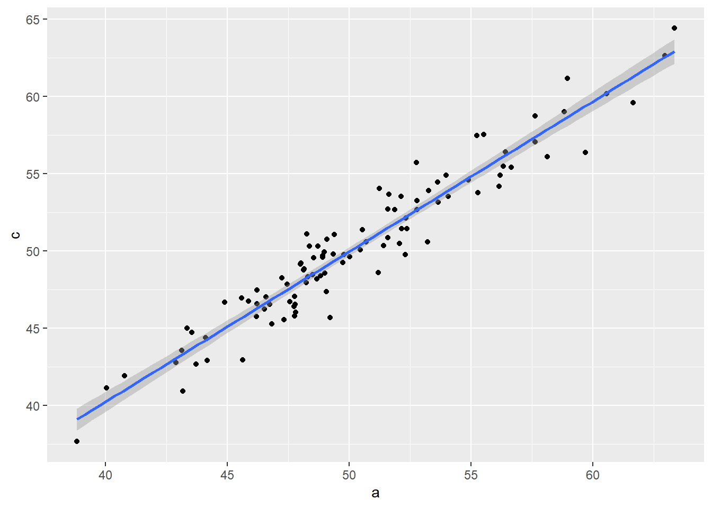

library(tidyverse) # for data wrangling
library(gtsummary) # for formatting model outputs into a nice html table
library(DiagrammeR) # for drawing dags
library(webshot2) #to help render doc1 Title: Causal diagram simulations
Start Date: 2025-03-23
Last modified: 2025-04-19
2 Load libraries
3 What to condition on and what not to condition on
In causal inference, the building of statistical models depends on how the variables from a collected dataset relate to one another. Here, I show the arrangement of variables with a Directed Acyclic Graphs (DAG)s. The different Dags show cases where it is not appropriate to condition on certain variables.
3.1 Chain in a DAG
Here is a chain, where B is a mediator. Mediators should not be conditioned on because it will limit the association between A and C.
mermaid("graph LR
A-->B
B-->C")3.2 Colliders in a DAG
Here is a collider, where C is a collider. Colliders should not be conditioned on because there will be a spurious association between a and b.
mermaid("graph TD
A-->C
B-->C")3.3 Confounders in a DAG
Here is a confounder, where B is a confound. Confounders SHOULD be conditioned on.
mermaid("graph LR
A-->C
B-->A
B-->C")4 Why we should not condition on a mediator
To determine why we should not condition on a mediator, we can simulate a chain DAG and compare a model where we condition on B vs a model without B (marginal model).
\[a \sim Normal(50,5)\] \[b\sim a + \epsilon\]
\[c\sim b + \epsilon\] Random error: \(\epsilon \sim Normal(0,1)\)
Note: It is expected for c and a to have 1:1 when b transmits effect.
# simulate mediator
#A->B->C
a<-rnorm(n=100,mean=50,sd=5)
b<-a+rnorm(n=100,mean=0,sd=1)#b is a function of a with random error centered around 0 c
c<-b+rnorm(n=100,mean=0,sd=1)
#now fit a model of c~a
mod1<-lm(c~a)
mod1|>
tbl_regression()| Characteristic | Beta | 95% CI | p-value |
|---|---|---|---|
| a | 0.99 | 0.93, 1.0 | <0.001 |
| Abbreviation: CI = Confidence Interval | |||
ggplot(data=tibble(a,c),aes(x=a,y=c))+geom_point()+stat_smooth(method="lm")`geom_smooth()` using formula = 'y ~ x'
#let's see how the estimate changes when we condition on a mediator
mod2<-lm(c~a+b)
mod2|>
tbl_regression()| Characteristic | Beta | 95% CI | p-value |
|---|---|---|---|
| a | -0.05 | -0.23, 0.14 | 0.6 |
| b | 1.1 | 0.88, 1.3 | <0.001 |
| Abbreviation: CI = Confidence Interval | |||
Conditioning on the mediator (b) reduces the causal effect of a–>c
4.1 Changing the mediator to a categorical variable to visualize
# try to set b as a categorical variable
a<-rnorm(n=100,mean=50,sd=5)
b<-if_else(a<50,0,1)
c<-b+rnorm(n=100,mean=0,sd=1)
mod2.11<-lm(c~a+b)
mod2.11|>
tbl_regression()| Characteristic | Beta | 95% CI | p-value |
|---|---|---|---|
| a | 0.00 | -0.07, 0.07 | >0.9 |
| b | 0.93 | 0.29, 1.6 | 0.005 |
| Abbreviation: CI = Confidence Interval | |||
#grouping by b (mediator) disrupts the correlation by a nd c
ggplot(data=tibble(a,c),aes(x=a,y=c,group=factor(b)))+geom_point()+stat_smooth(method="lm")`geom_smooth()` using formula = 'y ~ x'
5 Why we should not condition on a collider
Let’s start with a dag that illustrates a collider. The dag is A–>C and B–>C.To determine why we should not condition on a collider, we can compare a model where we do condition on C vs a model without conditioning on C. A and B are independent and should not correlate.
mermaid("graph TD
A-->C
B-->C")\[a \sim Normal(50,5)\] \[b \sim Normal(0,5)\] \[c \sim a+b+\epsilon\] Random error: \(\epsilon \sim Normal(0,1)\)
Note: It is expected that a and b are un-related
a<-rnorm(n=100,mean=50,sd=5)
b<-rnorm(n=100,mean=0,sd=5) #b is a function of a + random error
c<-a+b+rnorm(n=100,mean=0,sd=5) # c is a fucntion of a and b with random error
#fit a model between a-> b
mod3<-lm(b~a)
mod3|>
tbl_regression()| Characteristic | Beta | 95% CI | p-value |
|---|---|---|---|
| a | -0.14 | -0.35, 0.07 | 0.2 |
| Abbreviation: CI = Confidence Interval | |||
#There is no association between A and B.
#fit a model with a collider c
mod4<-lm(b~a+c)
mod4|>
tbl_regression()| Characteristic | Beta | 95% CI | p-value |
|---|---|---|---|
| a | -0.47 | -0.65, -0.30 | <0.001 |
| c | 0.40 | 0.31, 0.49 | <0.001 |
| Abbreviation: CI = Confidence Interval | |||
#There is an association when conditioning on C. Conditioning on a collider (c) introduces the causal effect of a–>b that is negative.
5.0.1 Side note: recovering effects of a and b on c
mod4.1<-lm(c~a+b)
mod4.1|>
tbl_regression()| Characteristic | Beta | 95% CI | p-value |
|---|---|---|---|
| a | 1.0 | 0.74, 1.3 | <0.001 |
| b | 1.1 | 0.86, 1.4 | <0.001 |
| Abbreviation: CI = Confidence Interval | |||
#now let's fit model with just one predictor alone
mod4.2<-lm(c~a)
mod4.2|>
tbl_regression()| Characteristic | Beta | 95% CI | p-value |
|---|---|---|---|
| a | 0.84 | 0.50, 1.2 | <0.001 |
| Abbreviation: CI = Confidence Interval | |||
5.1 More complicated collider case
where:
mermaid("graph TD
A-->B
A-->C
B-->C")\[a \sim Normal(50,5)\]
\[b \sim a+\epsilon\]
\[c \sim a+b+\epsilon\]
Random error: \(\epsilon \sim Normal(0,5)\)
Note: It is expected for a and b to have 1:1 relationship
a<-rnorm(n=100,mean=50,sd=5)
b<-a+rnorm(n=100,mean=0,sd=5) #b is a function of a + random error
c<-a+b+rnorm(n=100,mean=0,sd=5) # c is a fucntion of a and b with random error
#fit a model between a-> b
#there is a 1:1 relationship
mod3.1<-lm(b~a)
mod3.1|>
tbl_regression()| Characteristic | Beta | 95% CI | p-value |
|---|---|---|---|
| a | 0.94 | 0.75, 1.1 | <0.001 |
| Abbreviation: CI = Confidence Interval | |||
#There is no association between A and B.
#fit a model with a collider c
mod4.1<-lm(b~a+c)
mod4.1|>
tbl_regression()| Characteristic | Beta | 95% CI | p-value |
|---|---|---|---|
| a | -0.05 | -0.31, 0.20 | 0.7 |
| c | 0.50 | 0.39, 0.61 | <0.001 |
| Abbreviation: CI = Confidence Interval | |||
Note that the association between a and b is negative when conditioning on c, the collider (above) and when we do it here when a and b are correlated, the correlation breaks.
6 Why we should condition on a confounder
Simulate data and compare conditioning vs not on a confound.
\[b\sim Normal(5,5)\] \[a \sim Normal(50,5)+ b + \epsilon\] \[c\sim a + b + \epsilon\] Random error: \(\epsilon \sim Normal(0,1)\)
Note: It is expected for C to have a 1:1 effect from a.
b<-rnorm(n=100,mean=5,sd=5)
a<-rnorm(n=100,mean=50,sd=5)+b+rnorm(n=100,mean=0,sd=1)
c<-a+b+rnorm(n=100,mean=0,sd=1)
#without conditioning
mod5<-lm(c~a)
mod5|>
tbl_regression()| Characteristic | Beta | 95% CI | p-value |
|---|---|---|---|
| a | 1.5 | 1.4, 1.6 | <0.001 |
| Abbreviation: CI = Confidence Interval | |||
#with conditioning
mod6<-lm(c~a+b)
mod6|>
tbl_regression()| Characteristic | Beta | 95% CI | p-value |
|---|---|---|---|
| a | 1.0 | 0.99, 1.1 | <0.001 |
| b | 0.99 | 0.94, 1.0 | <0.001 |
| Abbreviation: CI = Confidence Interval | |||
Conditioning on b recovers the 1:1 relationship from a on c.
7 Summary
Drawing out a DAG for a specific case is important to determine how to analyze the data. For many observational studies, conditioning on confounders is critical and selecting the whole set of confounders is also important. Generally, baseline covariates are the confounders that is typically conditioned upon. It takes clinical expertise to decide which covariates to include.